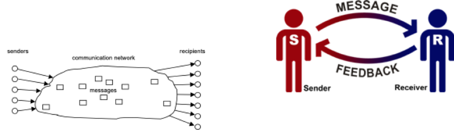

This position paper tries to outline a framework for defining trackers in smart phones and lists mechanisms for identifying them. It hopes to serve as the foundation for the work done in the Tracking-the-Trackers project.
In section 1 we start with an abstract analysis of levels of unwanted behaviour in the context of tracking.
Next, in section 2, we focus on an attacker’s perspective, on anonymity and pseudonymity. This foundation allows us to define terms which are needed throughout the paper.
Finally, we list proposed mechanisms for identifying trackers - based on the threat model (attacker) as well as the level of acceptable tracking.
Scope
This document talks about trackers in general on mobile devices (smartphones). However, for the purpose of verification, we exclusively focus on Android apps. First of all, Android has a 85% global market share, secondly Android apps (APKs) are easier to work on. With iOS apps, monitoring trackers (or instrumenting running code) is not as easy as on Android based systems. Therefore, whenever any claims are made, we refer to the Android ecosystem. We however believe that very similar behaviours exist on iOS based systems.
Also, this document does not talk about contact tracing (as in Covid-19 contact tracing).
Section 1: Levels of unwanted behaviour
The following section tries to categorize tracking respectively potential unwanted behaviour in apps by level of severity. This is done with a perspective for categories (labels) in a machine learning approach.
Level 0: No tracking at all / no network communication
The most harmless situation: an app is downloaded or shared in an anonymous way (Tor, etc.) and only uses offline features and/or uses unlinkable side channels for updates (for example flash cards). An example could be a map application which only displays a map and reads a phone’s GPS position to display the user’s location. There is no network communication at all and it still offers a useful service to its users. Map updates may be installed via flash cards or other physical transportation media. The app does not need to request a new map interactively from any server.
Level 1: Inadvertent tracking
This category includes tracking but the service provider and the app never intended to actually use the resulting data / meta-data for the purpose of tracking individuals.
Example: to illustrate this category, recall our map app from above. Only this time, it does request map (base layer) updates from a map server every 7 days. It also checks every day, if the map viewer app is the latest version. Based on this information, an attack could theoretically derive weekly IP address “beacons” from some user. Since the update check was not personalized, an attack can not be for sure, if an update request is from the same person or not. Hence, a user still has potentially enough anonymity.
This and the next category probably (to be verified) constitute the majority of “clean” apps.
Level 2: Unintentional tracking by use of chatty libraries
This category tracks users already quite heavily. The motive is not to increase ad revenue, build up user profiles to sell them nor to pass on the data to an aggregator. The unintentional tracking stems more from the fact that the app developer(s) used libraries which help them in developing the app and/or which are simply useful for the overall user experience.
Example: if we revisit our map example, we could imagine that the map app now also includes a search functionality. Users can type in the initial letters of a street name and for every letter they type, an AJAX HTTP request is sent to the map server. In addition, the developers felt that it would be useful to receive APM (application performance monitoring) logs as well as crash reports as well as a set of libraries to measure which features of an app the users actually use the most. These logs are sent periodically to some log collection server run by the developers.
Note that we still do not talk about (Google, Facebook etc) cookies here. We only talk about watching what users are typing (including backspace and corrections - an attacker can literally watch their thoughts via the global click-stream).
Level 3: Ad-revenue focused tracking of users and/or user behaviour (pseudonymized)
With this category, we are entering the area often described as surveillance capitalism: users are receiving cookies (if it’s a web based app) and or have unique IDs embedded in the app and these unique identifies (which are not tied to a person in the first place and hence are a ‘nym of the user) are being sent for nearly every network interaction. These IDs may (but not necessarily have to ) serve as authentication / authorization token ( see OAUTH 1,2, OpenID Connect) or may be purely auto-generated and simply serve for tracking actions users takes over the course of his day (so that the interest of a user may be extracted). These tracking IDs may then be forwarded and sold to aggregators.
While this may be acceptable to some users, since the techniques use pseudonymization, there is an implicit trap hidden in this approach: unique IDs are usually long enough so that they are unique globally (for example UUID strings). Thus, they can easily be correlated with real PII data and the pseudonymization vanishes instantly.
Level 4: Ad-revenue focused tracking of users and/or user behaviour (linked to person)
This category fits most non-open source commercial apps such as FB messenger, twitter, etc. (but it can occur as well in open source apps). The business model is to fully understand a user, his/her interests, his/her behaviour, location (-> location tracking), and very important - his/her circle of friends (contacts), etc. The “gold” in the app gold rush is a users’ interest and intent. In order to serve him/her adds better and faster (in the sub-millisecond range). Again, as in the previous category, these tracking IDs may then be forwarded and sold to aggregators.
We assume the vast majority of apps fall into this category.
Level 5: Full scale stealthy tracking (surveilling the spouse, kids, state actors, APT attacks, general surveillance, etc.)
This category would fit any technique which tries to secretly monitor as many actions on the whole smartphone (or potentially also via the smart phone on computers) of a person.
Example: kids tracking apps. Or hidden apps which check what your husband/wife is doing on his/her phone (and forwarding call logs , messages, etc.). State actors tracking dissidents, journalists or any chosen target also would use these techniques.
Often these apps can be identified by their extended permissions but not necessarily so. Well written apps in this category may be impossible to detect without major reverse engineering efforts.
Conclusions
Our work in the Tracking the Trackers project limits itself to Levels 3 and 4. We intentionally omit level 5, since this is a cat-and-mouse game with the attackers. It is rather trivial to change some behaviour for an attacker while our detection mechanism remains open source.
Section 2: an attacker’s perspective and a taxonomy
“There is nothing as practical as a good theory” – Kurt Lewin
This section builds upon the work of Pfitzmann and Hansen1 who did (to the author’s knowledge) the first thorough comparison of terminology in literature with respect to the concepts of anonymity, linkability, pseudonymity, etc. We believe that their work is a good framework for thought. It also hints at some connections to Shannon’s information theory and probability. However, the paper does not follow through on the maths.
The core insight of their work is that - if you include metadata of communication flows over the internet, and if you assume an attacker which can observe the whole network (passively)2, then true anonymity is nearly impossible to achieve for any regular app or program.
In this paper, we first briefly describe Pfitzmann’s and Hansens’ model and especially their attacker’s model / threat model. We then replicate their definitions and add some definitions of our own. The next step is to link their definitions to our categories of tracking.
Equipped with these theoretical tools, we can proceed to define what we consider tracking in Android apps and derive feature sets for an ML based approach.
The Pfitzmann-Hansen threat model
The threat model assumes a classical sender-receiver (source/sink) information model where the communication network is usually the internet. They assume an attacker to be yet another (possibly all-knowing) passive receiver. If messages pass the communication network, attributes (i.e. meta-data3 such as time + time zone when a message was sent, received, the packet size, the protocols used etc) may be derived by a receiver. These attributes may become another new message.

If we apply Pfitzmann’s and Hansens’ model to our levels, we arrive at the following insights:
- Level 0: the app is quiet → no harm, an all-knowing attacker can see the download of a level 0 app in the very best of cases.
- Level 1: the passive attack may derive IP addresses (and hence some ideas of a user’s location) and time stamps of when the app was in use. → the passive attacker can already track the user to some extent iff (if and only if) he also has access to the telecom’s IP address assignment database for that particular time window. This is usually only possible for nation state attackers. → out of scope.
- Level 2: In this scenario, it already depends a lot if the app is sending APMs, crash reports, or other “chatty library” messages. If unencrypted, a passive attacker may - already in this category gain a lot of information on the user. → we propose to include detection of APMs/crash reporting libraries in future versions of the tracking the trackers project.
- Level 3: While it is nice to notice that the developers tried to pseudonymise tracking in this category, it does not help the user very much. As long as a passive attacker may detect the pseudonymized IDs in messages flowing to a central server, he wins. He can track the user. Countermeasure: a guaranteed rotation of these unique IDs/tokens every x seconds (at fixed intervals). → we propose to look at this level of tracking in our research in order to identify unique tokens/API keys, unique IDs in apps which are easily detectable in order to guide the F-Droid store developer on how to avoid common pitfalls associated with fixed IDs/API keys etc.
- Level 4: for an attacker, this is the gold mine. Here, nearly every action may be passively observed. This is the case, we assume to be the most prevalent one in most apps (proof: just take a random app and look at the tcpdump stream of data it sends every second). We will aim to detect the most common tracking libraries.
- Level 5: here the attacker basically gains an upgrade from a passive attacker to an active attacker should he wish so. Game over for the user → out of scope for our research.
Summary
We identified a rough categorization of 5 levels of tracking. We reasoned what information an attacker may gain at each level and we defined the scope of our research.
(This work was supported by NLnet’s NGI Zero PET fund.)
- “Anonymity, Unlinkability, Undetectability, Unobservability, Pseudonymity, and Identity Management – A Consolidated Proposal for Terminology”, 2008, Andreas Pfitzmann (TU Dresden), Marit Hansen (ULD Kiel). http://dud.inf.tu-dresden.de/literatur/Anon_Terminology_v0.31.pdf [return]
- An assumption which is not far fetched - see the Snowden papers. [return]
- Compare with the quote “we kill people based on metadata” by the former CIA/NSA director Hayden. https://abcnews.go.com/blogs/headlines/2014/05/ex-nsa-chief-we-kill-people-based-on-metadata [return]